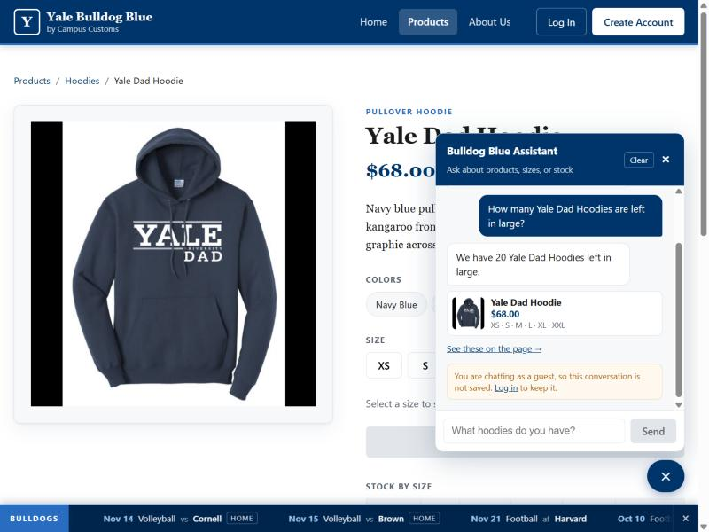

Chat checks the inventory level of an item
Required Pass
stock_for_product tool and answers
“We have 20 Yale Dad Hoodies left in large.” A product card with the real
photo, price and in-stock sizes appears beneath the reply. The amber strip confirms
this is a guest session, so nothing is being saved.
What this proves: the assistant reads live inventory rather than guessing.
- Asked
- How many Yale Dad Hoodies are left in large?
- Answered
- 20 left in large
- Database
yale-dad-hoodie→stock['L'] = 20- Result
- Exact match